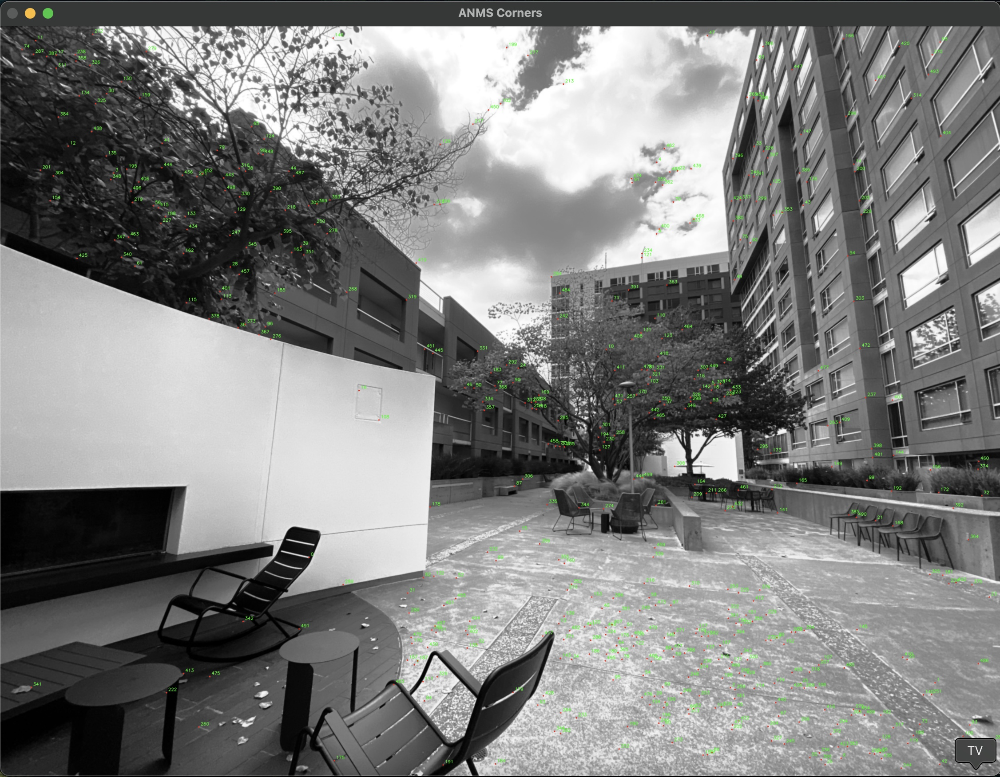
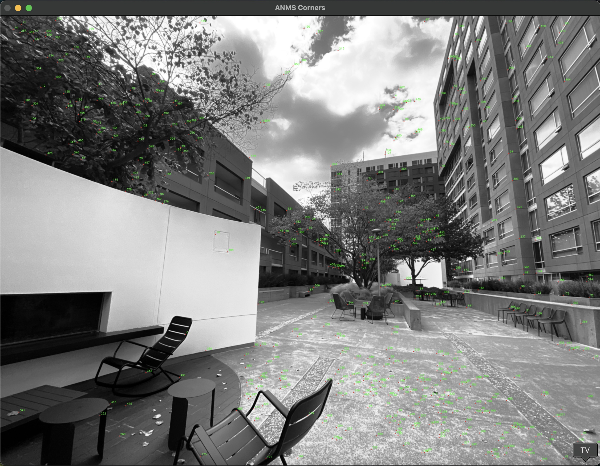

B.1: Harris Corner Detection
The images below show the detected Harris corners before and after applying ANMS (Adaptive Non-Maximal Suppression).
The key parameters tuned for Harris corner detection were sigma, min_distance,
and threshold_abs, as used in the following functions:
h = corner_harris(im, method='eps', sigma=1.5)
coords = peak_local_max(h, min_distance=10, threshold_abs=0.01 * h.max())
Better and more stable corners were observed after downsizing the image.
This improvement occurs because downsizing suppresses high-frequency noise and redundant texture variations,
enabling the Harris detector to respond primarily to strong, well-defined structural features.
It also results in a sharper and more distinct autocorrelation surface,
improving the separation between true corners and noisy edge responses.
Additionally, the image was histogram-equalized and lightly blurred to minimize sunlight effects
and suppress low-frequency illumination artifacts, ensuring consistent corner detection across regions with varying brightness.
 
